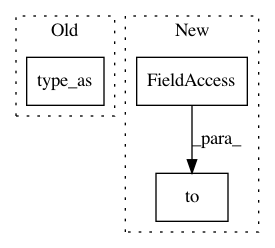

5a2f76ede044b4904af9461e18253f2929cfc5a4,fairseq/criterions/nat_loss.py,LabelSmoothedDualImitationCriterion,_compute_loss,#LabelSmoothedDualImitationCriterion#Any#Any#Any#Any#Any#Any#,29
Before Change
else: // soft-labels
losses = F.kl_div(logits, targets, reduction="none")
losses = losses.float().sum(-1).type_as(losses)
nll_loss = mean_ds(losses)
if label_smoothing > 0:
loss = nll_loss * (1 - label_smoothing) - mean_ds(logits) * label_smoothing
After Change
else:
logits = F.log_softmax(outputs, dim=-1)
if targets.dim() == 1:
losses = F.nll_loss(logits, targets.to(logits.device), reduction="none")
else: // soft-labels
losses = F.kl_div(logits, targets.to(logits.device), reduction="none")
In pattern: SUPERPATTERN
Frequency: 3
Non-data size: 3
Instances
Project Name: elbayadm/attn2d
Commit Name: 5a2f76ede044b4904af9461e18253f2929cfc5a4
Time: 2019-10-23
Author: dnn@fb.com
File Name: fairseq/criterions/nat_loss.py
Class Name: LabelSmoothedDualImitationCriterion
Method Name: _compute_loss
Project Name: arraiy/torchgeometry
Commit Name: 6ff01aaf6b59b75d610198b799c78f7a417036fc
Time: 2019-01-28
Author: edgar.riba@gmail.com
File Name: torchgeometry/homography_warper.py
Class Name: HomographyWarper
Method Name: warp_grid